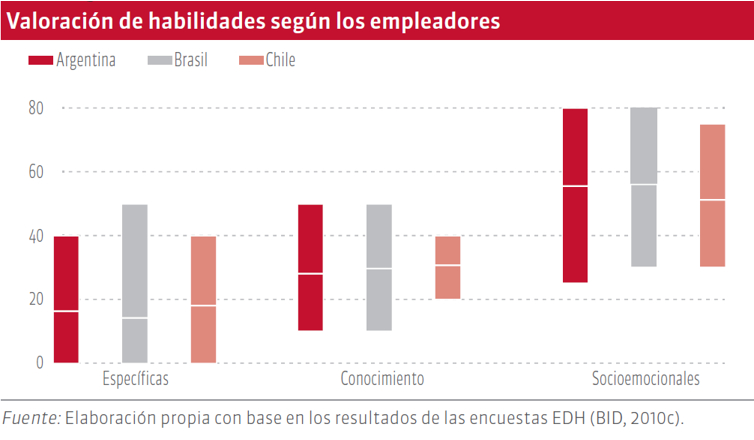

16 Soft skills
16.2 Artículo
El mercado laboral demanda de los profesionales un manejo apropiado de capacidades que van más allá del conocimiento técnico para desempeñar un trabajo, otras capacidades como las habilidades para relacionarse con las personas también son requeridas. El poseer un balance entre estas capacidades puede convertirse en un factor decisivo para alcanzar el éxito profesional.
Si eres un joven estudiante próximo a graduarse o un profesional recién graduado de una disciplina como la ingeniería, seguramente coincidirás conmigo que estás dotado de todo tipo de conocimiento técnico que te permite llevar a cabo las más sofisticadas tareas relacionadas a tu profesión. Por ejemplo para el ingeniero en sistemas sus conocimientos van desde una lógica muy estructurada, técnicas para el análisis y diseño de sistemas, manejo de distintos lenguajes de programación de última generación hasta habilidad de resolver problemas complejos apoyados en teoría matemática; todas éstas son capacidades que distinguen a los egresados de esta carrera y por ello son bien cotizados en el mercado laboral.
Es habitual observar que los profesionales de esta especialidad son personas con un alto desempeño realizando actividades individuales dentro de las organizaciones donde laboran. Sin embargo, la situación comienza a cambiar cuando se les presentan tareas que ponen a prueba su capacidad de relacionarse en tareas grupales con compañeros u otras personas de la organización. No digamos cuando uno de esos brillantes profesionales es promovido a un puesto donde debe dirigir, coordinar y supervisar el trabajo de otros, allí la situación puede tornarse complicada para el profesional.
¿QUÉ PUEDE PROVOCAR ESTA CONDICIÓN?
Todo el conocimiento adquirido durante los años de estudio está relacionado en su mayoría con aquellas habilidades técnicas que le permitirán realizar tareas en la disciplina de su elección y que son denominadas “hard skills” o “habilidades duras”; pero hay otras capacidades que están orientadas con la habilidad para relacionarse con otras personas que no fueron incluidas dentro de su cúmulo de conocimiento, o bien, que si fueron considerados pero con un contenido muy vago o general.
Estas últimas son conocidas como “soft skills” o “habilidades blandas”, están orientadas a aspectos tan variados como la capacidad de liderazgo, el trabajo en equipo, la comunicación efectiva, la resolución de conflictos, la inteligencia emocional y el conocimiento de la propia personalidad, por mencionar algunos.
Si bien expuse a propósito el ejemplo con la disciplina de la ingeniería en sistemas, porque he tenido oportunidad de observar ese fenómeno durante más de 10 años trabajando en el área de informática de una institución estatal, esta condición aplica a profesionales de todas las áreas y su relevancia no es reciente. Al buscar referencias sobre este tema en Internet los resultados fueron numerosos, sin embargo dos de ellos llamaron mi atención:
- Una publicación de la Oficina de Investigación y Desarrollo Educativo del Departamento de Educación de los Estados Unidos [1] que comenta sobre la Comisión de Secretaría para Lograr Nuevas Habilidades de Estados Unidos (en inglés Secretary’s Commission on Achieving New Skills - SCANS) que a principios de la década de los 90s fue creada con la tarea de identificar el conocimiento necesario para preparar a la juventud con miras de enfrentar los retos laborales del siguiente siglo.
- El informe del Banco Interamericano de Desarrollo, BID, del año 2012: “Desconectados: Habilidades, educación y empleo en América Latina” [2] que aborda la problemática de la transición de la escuela al mercado laboral en América Latina donde generalmente los jóvenes deben trabajar después de la escuela secundaria.
Sin entrar en detalle sobre el informe emitido en la primera de las referencias, destaco que dentro de las cinco categorías generales de competencias transversales necesarias para el trabajo ya identificaba a las “Relaciones interpersonales” que incluían: trabajo en equipo, enseñar a otros; servicio al cliente; desplegar liderazgo; negociar y trabajar con personas diversas.
En la segunda de ellas, se hace mucho énfasis en la relevancia de lo que la publicación llama “habilidades socioemocionales” que de acuerdo a la definición del mismo texto son “…aquellas que pertenecen al área del comportamiento o que surgen de los rasgos de la personalidad y que usualmente se consideran ‘blandas’” y la relación existente entre esas habilidades y lo que las casi 1,200 empresas argentinas, chilenas y brasileñas que fueron entrevistadas requieren al contratar jóvenes egresados de la educación secundaria, cuyo resultado se muestra en el siguiente gráfico [3]

Como puede verse en ambas publicaciones las “soft skills” son consideradas de suma importancia para un desempeño exitoso dentro del mercado laboral. Siendo un tema de tal relevancia desconozco el motivo por el cual este tipo de conocimiento no es parte obligatoria del currículo de las carreras profesionales y si lo es, cuál es el motivo por el que no se le da la atención necesaria, pero el objeto del presente texto no es encontrar esas causas sino invitar al lector a conocer sobre su existencia y preguntarse: ¿Cuántas de esas habilidades blandas poseo?
Si la respuesta anterior llevara a la siguiente pregunta: ¿Por dónde puedo comenzar?
Me atrevo a sugerir evaluar una de las “soft skills” que en mi opinión, agrupa de forma natural a otras habilidades, me refiero al LIDERAZGO.
La razón es simple, nadie sigue a otro que no le inspira: positivismo, confianza, claridad en lo que dice, capacidad de resultados, poseer habilidad para resolver conflictos, etc. Si ese es tu caso, sugiero comenzar por realizar una prueba que determine de forma rápida tu capacidad de liderazgo. En Internet encontrarás muchas de ellas, desde textos para imprimir y responder a mano[4], hasta pruebas en línea que incluso generan un reporte de resultado orientando sobre el área de mejora que debe abordarse [5]. Puedes complementar los resultados de las pruebas preguntando a 5 personas (que no sean familiares o amigos, pero con quienes te relacionas habitualmente) si ven cualidades de líder en ti y contrastarlas con los resultados de la prueba de liderazgo.
Si nunca has hecho esto, te aseguro que será una experiencia muy interesante ya que las personas nos ven de forma distinta al concepto que hemos desarrollado de nosotros mismos. A partir de tus resultados podrás decidir iniciar un plan de mejora personal.
Para finalizar he de indicar que existen opiniones distintas sobre qué tan necesario es la combinación y proporción de habilidades duras y blandas, pero en la práctica es evidente que aquellos profesionales que poseen “soft skills” están en una mejor posición para escalar hacia puestos gerenciales, contando con mayor cantidad de recursos y herramientas para desempeñarse laboralmente y obtener resultados exitosos en la organización donde trabajen o en la actividad en se desenvuelvan
Si eres un joven estudiante próximo a graduarse o un profesional recién graduado que desea competir en el mercado laboral, seguramente este tema te interesará.
16.3 Referencias
- [1] Deborah Whetzel The Secretary of Labor’s Commission on Achieving Necessary Skills http://www.edpsycinteractive.org
- [2] BID Desconectados. Habilidades, educación y empleo en América Latina http://www.iadb.org
- [3] BID Desconectados. Habilidades, educación y empleo en América Latina. Capítulo 6 Demanda de habilidades: las empresas tienen la palabra http://www.iadb.org
- [4] Blog.cat Test de Liderazgo (Kurt Lewin) http://blog.cat
- [5] Comunidad de Madrid Test de Liderazgo http://gestiona.madrid.org